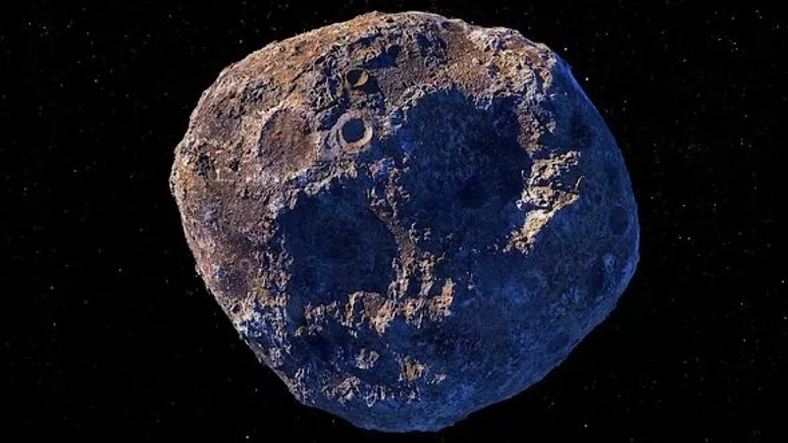
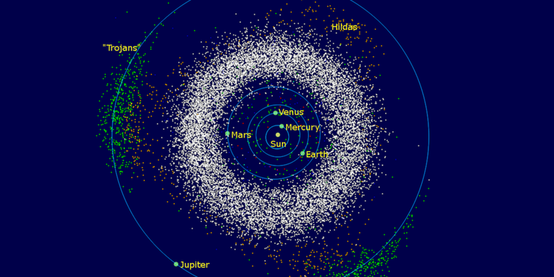

Asteroid
Dilansir dari Wikipedia Asteroid, disebut juga planet minor atau planetoid, adalah benda berukuran lebih kecil daripada planet, tetapi lebih besar daripada meteoroid, umumnya terdapat di bagian dalam Tata Surya (lebih dalam dari orbit planet Neptunus). Asteroid berbeda dengan komet dari penampakan visualnya. Komet menampakkan koma ("ekor") sementara asteroid tidak. Istilah ini secara historis ditujukan untuk semua objek astronomis yang mengelilingi matahari dan setelah diobservasi tidak memiliki karakteristik komet aktif.
Ada jutaan asteroid, yang menurut pemikiran banyak orang adalah sisa-sisa kehancuran planetisimal, material di dalam solar nebula matahari muda yang tidak pernah tumbuh besar untuk menjadi planet. Mayoritas asteroid yang telah diketahui mengorbit pada sabuk asteroid di antara orbit Mars dan Jupiter atau berbagi orbit dengan Jupiter (Asteroid Troya Jupiter). Tetapi, terdapat keluarga orbit lainnya dengan populasi signifikan, termasuk asteroid dekat-Bumi. Asteroid individual diklasifikasikan berdasarkan karakteristik spektrum emisi mereka, dengan mayoritas terbagi menjadi tiga kelompok utama: tipe-C, tipe-M, dan tipe-S. Kelompok ini diberi nama dan umumnya diidentifikasi dari komposisi karbon, logam, dan silikat.
Hanya satu asteroid, 4 Vesta, yang memiliki permukaan relatif reflektif, secara normal dapat dilihat dengan mata telanjang dan ini hanya pada langit yang sangat gelap dan posisinya memungkinkan. Asteroid-asteroid kecil yang melintas dekat dengan bumi jarang dapat dilihat dengan mata telanjang dalam waktu yang singkat. Hingga April 2016, Pusat Planet Minor memiliki data lebih dari 1,3 juta objek di dalam dan luar Tata Surya, 750.000 di antaranya telah memiliki informasi yang cukup untuk penamaan bernomor.
Penemuan
Asteroid yang pertama kali ditemukan adalah Ceres pada tahun 1801 oleh Giuseppe Piazzi dan pada awalnya dipertimbangkan sebagai planet baru. Penemuan ini diikuti dengan penemuan benda-benda lainnya yang serupa, yang dengan peralatan saat itu, terlihat sebagai titik-titik cahaya, seperti bintang, menunjukkan cakram planet dalam bentuk kecil atau tidak ada sama sekali, meskipun secara mudah dapat dibedakan dari bintang karena gerakan mereka yang terlihat. Hal ini mendorong astronom Sir William Herschel untuk mengusulkan istilah "asteroid", berasal dari bahasa Yunani, ἀστεροειδής asteroeidēs berarti 'seperti bintang, berbentuk bintang', dari bahasa Yunani Kuno, ἀστήρ astēr yang artinya 'bintang, planet'.

243 Ida adalah asteroid yang merupakan bagian dari famili Koronis di sabuk asteroid. Asteroid ini ditemukan pada tanggal 29 September 1884 oleh Johann Palisa dan dinamai dari seorang nimfa dalam mitologi Yunani. Pengamatan berikutnya dengan menggunakan teleskop menunjukkan bahwa Ida adalah asteroid tipe S, yang merupakan jenis dengan jumlah terbanyak di sabuk asteroid dalam. Pada 28 Agustus 1993, Ida dikunjungi oleh wahana Galileo yang sedang menuju ke Yupiter. Asteroid ini merupakan asteroid kedua yang dikunjungi oleh wahana angkasa dan asteroid pertama yang diketahui memiliki satelit alami.
Asteroid dalam sistem tatasurya
Sudah sebanyak ratusan ribu asteroid di dalam tatasurya kita diketemukan dan kini penemuan baru itu rata-rata sebanyak 5000 buah per bulannya. Pada 27 Agustus 2006, dari total 339.376 planet kecil yang terdaftar, 136.563 di antaranya memiliki orbit yang cukup dikenal sehingga bisa diberi nomor resmi yang permanen. Di antara planet-planet tersebut, 13.350 memiliki nama resmi (trivia: kira-kira 650 di antara nama ini memerlukan tanda pengenal). Nomor terbawah tetapi berupa planet kecil tak bernama yaitu (3360) 1981 VA; planet kecil yang dinamai dengan nomor teratas (kecuali planet katai 136199 Eris serta 134340 Pluto), yaitu 129342 Ependes.
Kini diperkirakan bahwa asteroid yang berdiameter lebih dari 1 km dalam sistem tatasurya tatasurya berjumlah total antara 1.1 hingga 1.9 juta. Astéroid terluas dalam sistem tatasurya sebelah dalam, yaitu 1 Ceres dengan diameter 900–1000 km. Dua asteroid sabuk sistem tatasurya sebelah dalam, yaitu 2 Pallas dan 4 Vesta; keduanya memiliki diameter ~ 500 km. Vesta merupakan asteroid sabuk paling utama yang kadang-kadang terlihat oleh mata telanjang (pada beberapa kejadian yang cukup jarang, asteroid yang dekat dengan bumi dapat terlihat tanpa bantuan teknis; lihat 99942 Apophis).
Massa seluruh asteroid Sabuk Utama diperkirakan sekitar 3.0-3.6×1021 kg, atau kurang lebih 4% dari massa bulan. Dari kesemuanya ini, 1 Ceres bermassa 0.95×1021 kg, 32% dari totalnya. Kemudian asteroid terpadat, 4 Vesta (9%), 2 Pallas (7%) dan 10 Hygiea (3%), menjadikan perkiraan ini menjadi 51%; tiga seterusnya, 511 Davida (1.2%), 704 Interamnia (1.0%) dan 3 Juno (0.9%), hanya menambah 3% dari massa totalnya. Jumlah asteroid berikutnya bertambah secara eksponensial walaupun massa masing-masing turun. Dikatakan bahwa asteroid Ida juga memiliki sebuah satelit yang bernama Dactyl.